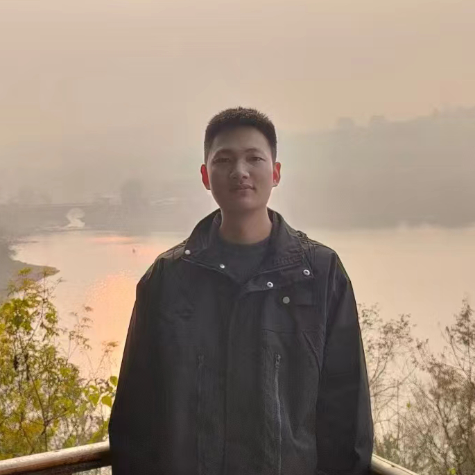

游吉红
电话：13551974682
您好！我是游吉红，一位在创意设计与技术实现领域不断探索与突破的全方位设计师。拥有超过5年的实战经验，我擅长将创新思维与精湛技艺融合，为项目注入无限活力与视觉冲击力。
在项目管理方面，我不仅能够独立策划并执行从概念构想到最终交付的全过程，还擅长跨部门沟通协调，确保项目按时按质完成。我深知每一个细节对于项目成功的重要性，因此总能在复杂多变的环境中灵活应对，实现项目目标的最优化。
在视觉作品创作上，我擅长运用色彩心理学、排版美学及图像处理技术，创造出既符合品牌调性又吸引目标受众的视觉盛宴。从海报设计、UI/UX界面到品牌视觉体系构建，我总能精准捕捉客户需求，用设计语言讲述品牌故事，提升品牌形象与价值。
电商设计更是我的专长之一。我熟悉各大电商平台的设计规范与消费者行为模式，能够设计出既美观又高效的电商页面，有效提升转化率与用户体验。从产品详情页、店铺首页到营销活动页面，我都能精准把握市场趋势，运用创意思维与数据分析，助力商家实现销售增长。
此外，我还精通3D建模技术，能够将想象中的创意场景或产品以三维形式生动呈现。无论是产品设计、场景搭建还是动画制作，我都能运用专业软件（如3ds
Max、Maya、Blender等）创造出逼真细腻、富有层次感的3D作品。这项技能不仅丰富了我的设计工具箱，更为我赢得了众多客户的认可与好评。
总之，我是一位集项目管理、视觉设计、电商策划与3D建模于一身的全能型设计师。我热爱挑战，享受创造，期待与您携手，共同打造更多令人瞩目的项目与作品，为品牌增值，为用户带来惊喜。